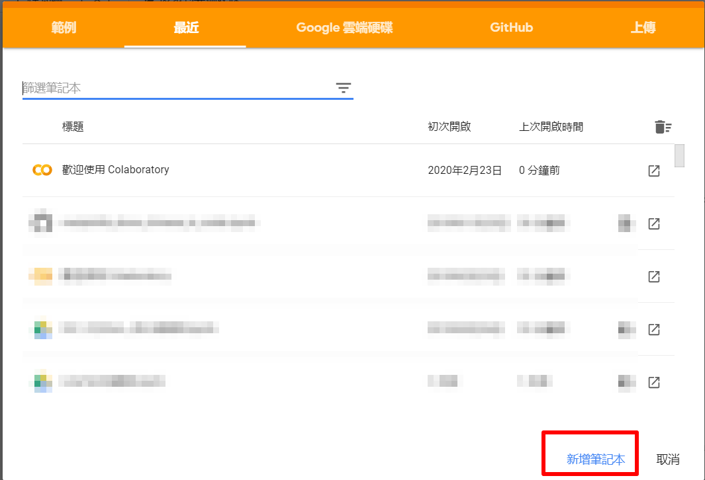
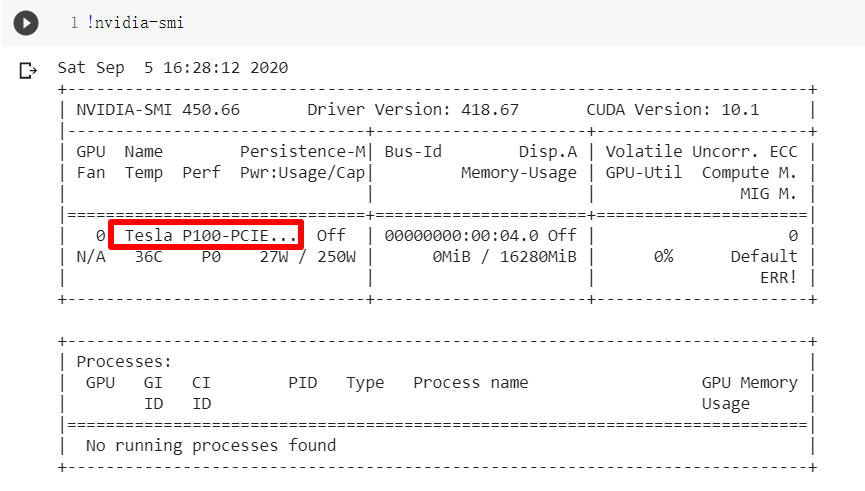
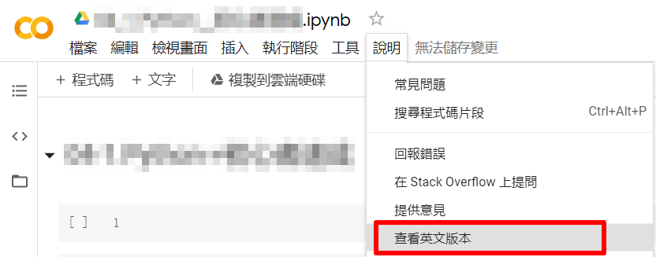
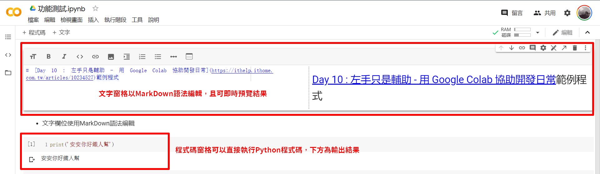
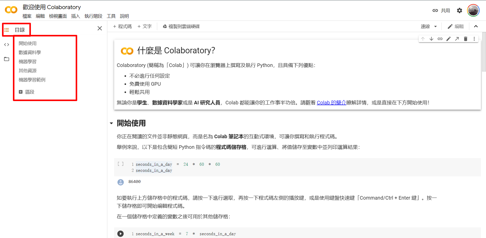
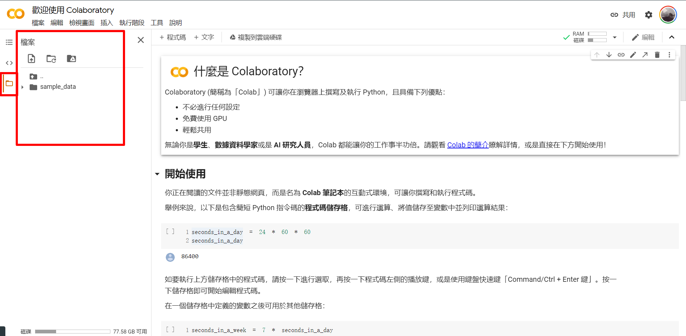

Colab
https://ithelp.ithome.com.tw/m/articles/10234527
程式入門者對程式環境設定一直是個不小的坑與門檻，如果有頻繁在各種桌機、筆電、 OS 系統執行 Python 程式，設定環境費時費力。 Colab 是以雲端網頁呈現的 Python 筆記本形式，類似 Jupyter Notebook，但開啟時其實是幫你開啟一個 Linux 虛擬機，加上可以調用免費 GPU 算力，可以輕鬆達到跨平台使用的目的，也不只是可用於資料科學領域，對於程式日常開發而言也是好幫手。
- 優點
- 使用雲端空間，不用自己的電腦空間。
- 可免費用 Colab 的 GPU 算力，執行深度學習速度有感。
- 可以跳過 Mac 、 Win 的各種坑，設定省心。
- 手機平板也可以執行，但建議只用來看成果，因為容易斷線且優化待加強。
- 缺點
- 佔用 Google 雲端硬碟容量，有些學校有提供學生/校友免費申請 Gmail 教育帳號，使用空間無限大(更新:Google 2022年7月取消該政策改有限額度)。如需自行付費資訊參閱Google說明。
- Colab 設定其實也有不少坑，下一篇會分享實用的填坑技巧。
- 雲端服務一定要有網路。
如何開啟 Colab 筆記本?
從Google搜尋Colab新增或開啟檔案
- 將
colab關鍵字餵狗(Google)後出現的 Google Colab 即是，歡迎頁面目前已經改為繁體中文介面，或直接依提示視窗選擇用範例、 Google 雲端硬碟、 GitHub 或本機上傳。
{kind=link}
從 Google 雲端資料夾開啟 Colab
- 至您的雲端資料夾，如果有任何副檔名是
.ipynb的檔案，就可以用 Colab 服務開啟此筆記本。
- 以滑鼠右鍵點選
.ipynb檔案，選擇開啟工具，如果先前有「連結」過，就會有「Google Colaboratory」的選項
{kind=link}
從超連結開啟 Colab
- 如果在 Google 雲端硬碟的
.ipynb沒有出現像上圖的 Colab 選項，可以進行以下步驟：
{kind=link}
{kind=link}
常用相關配置
更改為GPU運算
Colab 有意提供 GPU 運算資源給願意投入深度學習領域的開發者，如需使用免費 GPU 資源可依下方式更換。但如果您的程式未用到 GPU 資源，目前 Golab 版本會在右下方提示建議您改回 CPU 運算(當然也可以不改，目前)。
- 點選「執行階段」-「變更執行階段類型」
{kind=link}
- 選擇變更為 GPU 運算 選單下方有提示"如要發揮 Colab 的最大效益，請避免在不必要的情況下使用 GPU "。(如非深度學習其實沒必要使用 GPU 喔)
{kind=link}
- 查看 GPU 資訊
!nvidia-smi嘿嘿這次要到Tesla P100，以前常開到Tesla K80，Google也有不斷升級超佛心!
{kind=link}
更改為英文版(選用)
- 建議改成英文版，原因有2:
- 預設繁體中文翻譯不見得看得懂。
- 繁體中文目前排版不是等間距字元!!(希望以後會改)

{kind=link}
Colab 操作指南
{kind=link}
- 文字欄位使用 MarkDown 語法編輯， 程式碼欄位可輸入程式，按下
Play按鍵或Shift + Enter，執行結果會在程式碼下方顯示。
{kind=link}
- 側邊欄目前有三個功能
- 目錄，目錄的產生來自您文字欄位的 MarkDown 語法設定的
# 大標、# 次標，另外您文字 Cell 也可以依照您的標題次序展開/收合。 程式碼片段，Colab 有許多奇技淫巧，在此處您可以搜尋、閱讀解說、將範例插入程式碼區塊。建議可以花時間逐一瀏覽，讓腦海有這些用途概念以便伺機採用。
- 檔案，前面提到每個 Colab 其實是 Google 幫您開了雲端虛擬 Linux 主機，如果您有 Linux 基礎則您運用時如虎添翼，終端機（Terminal）指令只要在前方加入
!+指令即可，例如!pip install Flask，並且支援!cp、!mv、!git clone等指令。上傳/下載檔案也可直接在此側分頁操作，或設計按鈕介面在 Colab 的 Cell 供使用者操作(程式碼片段的分頁有範例)。
- 目錄，目錄的產生來自您文字欄位的 MarkDown 語法設定的
{kind=link}
{kind=link}
{kind=link}
- 更多功能仍請參閱歡迎頁面，下方很多範例有關機械學習/深度學習，有興趣可以開啟執行，或許會開啟您邁向AI領域之路。
小結
- Colab 還有不少有趣的設定，包含實用的深色主題模式、柯基與貓咪模式則是 Colab 頁面有狗或貓咪跑來跑去、連續打字還會集氣 COMBO 放煙火( Google 到底嗑了什麼)。
- 下篇會介紹 Colab 在連結硬碟、繪圖中文顯示問題的實用解法，我們下篇見!
補充更新
- Google雲端硬碟教育版預計預計2022年7月之後將限制100TB 的使用上限。